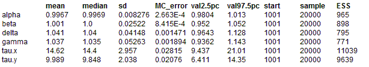
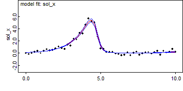
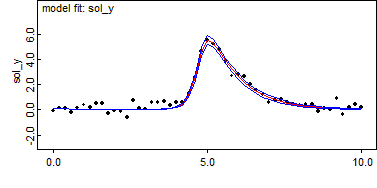

Lotka-Volterra: A simple differential equation model
In this section we will take a look at the Lotka-Volterra system of equations
dx/dt = x(α− βy), dy/dt = −y(γ− δx)
where α, β, γ, δare positive real quantities. For a simulation run we would specify the values ofα, β, γ, δ as constants, and for an inference run attempt to estimate their values from observations of x and y. Note that systems of differential equations do not require all variables to be observed to perform an inference computation; in more realistic cases we might only observe one variable of a system of many equations.
In the BUGS language the model is
model
{
solution[1:ngrid, 1:ndim] <- ode.solution(init[1:ndim], tgrid[1:ngrid], D(C[1:ndim], t),
origin, tol)
alpha <- exp(log.alpha)
beta <- exp(log.beta)
gamma <- exp(log.gamma)
delta <- exp(log.delta)
log.alpha ~ dnorm(0.0, 0.0001)
log.beta ~ dnorm(0.0, 0.0001)
log.gamma ~ dnorm(0.0, 0.0001)
log.delta ~ dnorm(0.0, 0.0001)
D(C[1], t) <- C[1] * (alpha - beta * C[2])
D(C[2], t) <- -C[2] * (gamma - delta * C[1])
for (i in 1:ngrid)
{
sol_x[i] <- solution[i, 1]
obs_x[i] ~ dnorm(sol_x[i], tau.x)
sol_y[i] <- solution[i, 2]
obs_y[i] ~ dnorm(sol_y[i], tau.y)
}
tau.x ~ dgamma(a, b)
tau.y ~ dgamma(a, b)
}
Data
list(
ndim = 2,
origin = 0,
tol = 1.0E-3,
ngrid = 51,
init = c(0.1, 0.1),
tgrid = c(0.00000, 0.20000, 0.40000,0.60000,0.80000,1.00000, 1.20000, 1.40000, 1.60000, 1.80000, 2.00000, 2.20000, 2.40000, 2.60000, 2.80000, 3.00000, 3.20000, 3.40000, 3.60000, 3.80000, 4.0000, 4.20000, 4.40000, 4.60000, 4.80000, 5.00000, 5.20000, 5.40000, 5.60000, 5.80000, 6.00000, 6.20000, 6.40000, 6.60000, 6.80000, 7.00000, 7.20000, 7.40000, 7.60000, 7.80000, 8.00000, 8.20000, 8.40000, 8.60000, 8.80000, 9.00000, 9.20000, 9.40000, 9.60000, 9.80000, 10.00000),
obs_x = c(
-0.01608,-0.1708,-0.0192,0.2032,0.3486,
-0.01108,0.315,0.6167,0.4196,0.5054,
0.7239,1.068,0.8091,0.6691,1.346,
1.218,2.309,2.2,3.277,3.208,
4.597,5.637,5.185,4.994,2.669,
0.7339,0.6815,0.2066,0.2027,0.2085,
-0.08637,-0.1749,-0.3844,-0.2784,0.1318,
-0.3821,0.04724,0.2159,-0.2631,-0.0816,
0.08449,0.1473,-0.09645,0.09215,0.3158,
-0.2747,0.3103,0.06757,0.1865,0.6497,
0.2115),
obs_y = c(
-0.08858,0.1434,0.08245,-0.2407,0.1387,
0.3802,0.1598,0.5153,0.5177,-0.2911,
-0.08854,-0.1508,-0.5889,0.754,0.08401,
0.06299,0.5945,0.553,0.6552,0.3397,
0.5566,0.5873,1.304,2.533,4.639,
5.462,5.215,4.756,3.819,2.679,
2.772,2.633,2.009,1.57,1.205,
0.572,0.7306,0.8157,0.6071,0.3905,
0.33,0.3983,0.399,-0.1115,0.1113,
-0.01252,0.8656,-0.3442,0.1883,0.445,
0.1585),
a = 0.001,
b = 0.001
)
Inits for chain 1
list(
log.alpha = 0.40,
log.beta = -0.69,
log.gamma = 0.40,
log.delta = -0.30,
tau.x = 0.01,
tau.y = 0.01
)
Inits for chain 2
list(
log.alpha = 0.0,
log.beta = 0.09,
log.gamma = 0.0,
log.delta = 0.0,
tau.x = 0.1,
tau.y = 0.1)
Results


